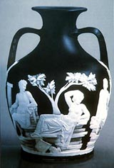

|
The
Life of Josiah Wedgwood
Josiah
Wedgwood was born in Burslem, Staffordshire where potters had been
situated for a long time. His father was a potter himself and at
the age of fourteen Wedgwood was apprenticed to his brother Thomas,
who was also a potter. Wedgwood's heirs Josiah
Wedgwood & Sons, still run the business today.
Being a diligent worker and pupil Josiah soon became skilled at
all aspects of the trade. He soon recognized the potential market
that existed for ceramics in England, due to the backwardness of
techniques and ideas at the time.
He was a perfecter and also innovator of a whole range of new
techniques in the second half of the 18th century. He discarded
traditional Staffordshire forms and began incorporating elements
of 'higher' Rococo and Neoclassical art into his work, creating
articles that were to become fashionable amongst the 'high society'
of England, which up to then had traditionally mainly used silver
or other metal utensils on their dinner tables. Wedgwood was also
remarkable for his business capabilities, always trying to get as
much publicity for his products as possible. He was the first potter
to print catalogues with illustrations of his wares, which were
themselves always of the best quality.
Wedgwood's first great success was the perfection of a cream-coloured
crockery which had been produced in Staffordshire from the early
18th century onwards. The chemical composition was actually that
of a stoneware clay, but it was fired to an earthenware temperature
and lead-glazed, giving it it's characteristic creamy yellow color.
Wedgwood was able to eliminate the problem of crazing (he appearance
of small cracks in the glaze) which had been a great problem in
English pottery up to that time He also perfected a green glaze
which appeared on popular fruit and vegetable teapots, such as the
well-known 'cauliflower' tea- pot. The taste for such items waned
by the mid 1760's and the more simple 'cream-coloured' ware became
more popular, especially after Wedgwood was conferred royal patronage
by Queen Charlotte of England, in merit of this ware, which was
from then on called 'Queen's
Ware'. This 'Queen's Ware' became so popular and well-known
that in 1767 Wedgwood wrote: "The demand for this said cream color.,
alias Queen's Ware, alias Ivory still increases. It is really amazing
how rapidly the use of it has spread almost over the whole globe
and how universally it is liked."
Being named 'Potter to Her Majesty' led to a huge amount of publicity
for Wedgwood. This association with the Queen proved to be very
fruitful and Wedgwood didn't hesitate to capitalize on the fact
by using the term 'Queen's Ware' as much as possible.
In 1770 he received an order from the Empress Catherine the Great
of Russia for a 'Queen's Ware' dinner service for two dozen people
and in 1773 a further order for a dinner and dessert service for
fifty people. This set was completed in 1774 and consisted of over
950 pieces which were decorated with scenes from the English countryside.
Wedgwood must have known that an order such as this one would not
be very profitable due to the high costs of production (each plate
was decorated with an individual scene as a 'one-off' piece) but
he was not one to let such a publicity opportunity slip through
his hands. In her book 'The Story of Wedgwood' Alison Kelly states
that "No expense was spared, and the financial outlay was extremely
small. Catherine the Great's archives show that she paid Wedgwood
16,406 rubles and 43 kopeks, or a little over 2,!00 pounds, while
his expenses have been calculated as being about 2,612 pounds. However
as an advertisement the service amply justified itself. It was put
on display in Josiah's Greek Street showrooms, was visited by the
nobility and also Queen Charlotte, and became the fashionable topic
of conversation."
Next Page > Wedgwood
the Innovator > 2
More Articles
|